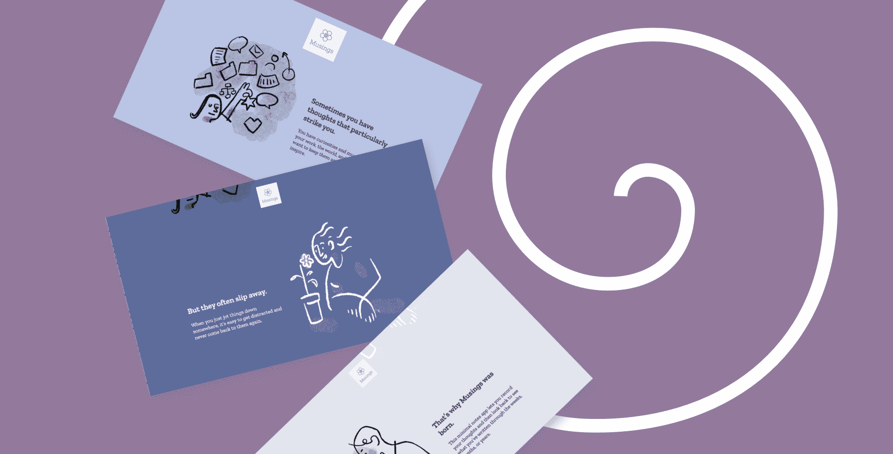

Explorations in Interactivity
Background
I’ve been using a lot of JavaScript libraries to add animation to my projects, and I realized that I didn’t know how they actually worked. I wanted to gain a deeper understanding of how interactivity works with HTML + CSS + vanilla JavaScript.
I took some courses from SuperHi which gave me a foundation to do some exploration in web interactivity. These projects are some highlights of my work.
Musings Landing Page
This is the first iteration of my landing page for my Musings app (full case study here).
The page features interactivity in the form of:
- Parallax with the word phrases
- Rotation on scroll
- Header shrinking on scroll
- Background color smoothly changing with each section
- Rotating stickers that appear on click (make sure your sound is turned on!)
Check out the page below or see the page in a separate tab, and see the full code base on github.
Interactive Table of Contents
On my portfolio website, I wanted to be in-depth about my work and my process, but the pages ended up being far too long and unusable. I decided to create an interactive table of contents to help the reader see what content was available and quickly navigate to the sections that are most interesting to them.
The page features interactivity in the form of:
- Table of contents hidden until after scrolling past the main cover photo
- Sections highlighted when a user is reading that section
- Navigating easily to any section upon clicking the label
- On mobile, table of contents hidden and "go to top" button appears instead
- (On the back end:) Setup that automatically populates the labels based off h2 and h3 tags
Check out the interactivity to the left of this page you're on right now (on larger screens).
Dim Sum Photo Fun
As a way to showcase interactivity with photos (as well as one of my favorite foods), I created a random photo burst collage for dim sum.
The page features interactivity in the form of:
- Random photo bursts on hover
- Rotating photo displays on click
- A dynamic sidebar with menu selection
Check out the page below or see the page in a separate tab, and see the full code base on github.
Lessons Learned
Building interactivity is fun! It really brings life to otherwise standard content and creates an interesting and memorable experience for the user.
I really enjoyed playing around with CSS and JavaScript, getting a better understanding of how to use various attributes within the document, window, and event listeners.
Learning how to implement parallax and scroll-based actions was a wild ride, but now that I’ve figured out the basic framework, it’s fun to iterate on what’s possible.
Overall these explorations helped me gain deeper confidence in my HTML + CSS + JS skills, and I feel confident enough to tackle future web development projects with more sophistication—-and fun!